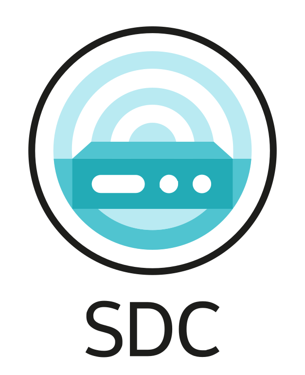

SwiNOG #42
Kubernetes already runs our network functions.
It should configure them, too.
$ kubectl apply -f app.yaml
deployment.apps/app created$ kubectl apply -f db.yaml # the pod
$ psql -c "CREATE DATABASE orders"$ helm install upf ./upf # the pod
$ ssh -s upf netconf # the config
<edit-config>...</edit-config>Custom Resource Definitions extend the Kubernetes API.
kind: CustomResourceDefinitionCustom Resources instantiate a CRD.
kind: ConfigUse of Operators or templates to run custom logic.
watch → compare → actSame API, same tooling (kubectl, RBAC, GitOps) for anything you can model.
list device {
key "name";
leaf name { type string; }
leaf role {
type enumeration { enum spine; enum leaf; }
mandatory true;
}
leaf mgmt-ip {
type inet:ipv4-address;
must "starts-with(., '10.')" {
error-message "IP must be 10.x.x.x";
}
}
}<device>
<name>leaf-1</name>
<role>leaf</role>
<mgmt-ip>10.1.1.10</mgmt-ip>
</device>
<device>
<name>spine-1</name>
<role>spine</role>
<mgmt-ip>10.2.0.1</mgmt-ip>
</device>mgmt-ip 10.1.1.10mgmt-ip 192.168.1.1: IP must be 10.x.x.xrole router: not one of spine, leafCloud-native network configuration for anything YANG-modelled
kind: Config
metadata:
name: new-interface
labels:
config.sdcio.dev/targetName: demo-device
spec:
priority: 90
lifecycle:
deletionPolicy: delete
revertive: true
config:
- path: /
value:
interface:
- name: eth1
ipv4-address: [10.10.10.10]delete: remove from deviceorphan: leave itrevertive: re-apply intentThe lower the priority number, the higher the precedence.
Without competition, the result is simply a merge of all intents.
Delete overlap-config: back to 192.0.2.10, nothing was lost.
kind: Deviation
metadata:
name: device01-baseconfig
spec:
deviations:
- path: network/service[name=svc-a]/bandwidth
desiredValue: 5000
actualValue: 100
reason: NOT_APPLIED| Reason | Meaning | SDC does |
|---|---|---|
| NOT_APPLIED | intended value is not on the device | reports onlyrevertive: re-applies |
| OVERRULED | a higher-priority Config wins | reports only |
| UNHANDLED | brownfield config, no Config owns it | reports only |
running + intended + deviation in one tree, each value tagged with its owner
Config Blame is to Config apply what Git Blame is to commit.
$ kubectl sdc blame --target demo-device
----- │ 🎯 demo.demo-device
----- │ └── 📦 network
----- │ ├── 📦 interface
----- │ │ ├── 🔑 name=eth0
demo.initial-config │ │ │ ├── 🍃 admin-up -> true
demo.overlap-config │ │ │ └── 🍃 ipv4-address -> 20.20.20.20
----- │ │ └── 🔑 name=eth1
demo.new-interface │ │ └── 🍃 ipv4-address -> 10.10.10.10
----- │ └── 📦 service
----- │ ├── 🔑 name=svc-a
demo.initial-config(*) │ │ └── 🍃 bandwidth -> 100 [~> 5000]
----- │ └── 🔑 name=svc-c
running │ └── 🍃 bandwidth -> 500Left: owner (namespace.config or running = brownfield) · -> 100 actual · [~> 5000] expected · (*) deviation
Runs in the cluster: discovery, intent merge, validation, southbound drivers, sync.
github.com/sdciokubectl sdcKubectl plugin for the SDC API — inspect what is really on the device, who owns each leaf, and handle drift; same context and RBAC as always.
github.com/sdcio/kubectl-sdcLocal CLI — YANG schemas and configs on your machine or in CI, no cluster required.
Install: release binaries or install.sh on each repo · docs: docs.sdcio.dev
Target created by discoveryblamedeviation and self-healingdocs.sdcio.dev
kubectl-sdc, sdc-lite, …)Alexander North · alexander.north1@swisscom.com
Markus Vahlenkamp · markus.vahlenkamp@nokia.com